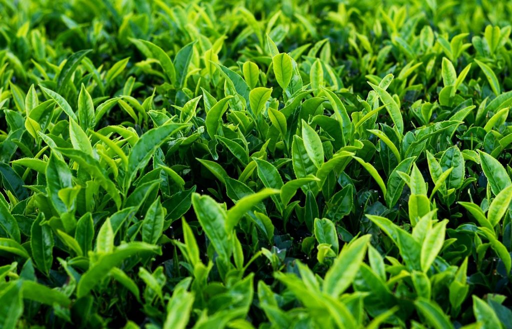
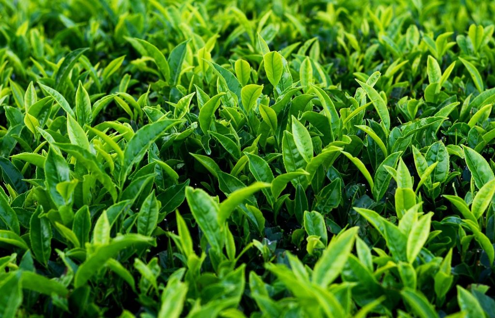
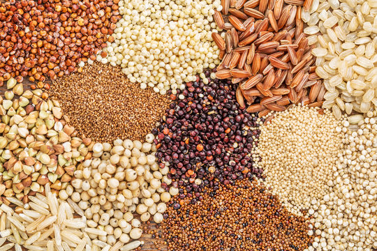
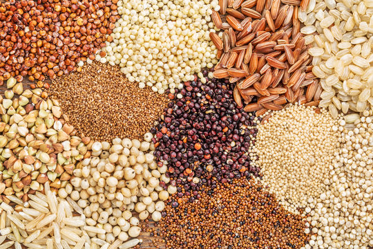

1. TEA / 1. चाय
 

Tea in Arunachal is typically grown in the two main seasons—first flush during March to May and second flush
from June to September.
Assam dominates India's tea production and market share, with the majority of its tea sold locally and
in international markets.
Assam tea thrives in well-drained, loamy soils with high acidity, such as those found in the Brahmaputra
Valley.
Tea plants take 3-4 years to mature, and resources include labor for plucking, suitable machinery, and
regular maintenance.
Besides Assam, tea demand is high in West Bengal, Darjeeling, and other northeastern states,
contributing to India's global tea prominence.
अरुणाचल में चाय आमतौर पर दो मुख्य मौसमों में उगाई जाती है - पहली बार मार्च से मई के दौरान और दूसरी बार जून
से सितंबर तक।
असम भारत के चाय उत्पादन और बाजार हिस्सेदारी पर हावी है, इसकी अधिकांश चाय स्थानीय और अंतरराष्ट्रीय
बाजारों में बेची जाती है।
असम की चाय अच्छी जल निकासी वाली, उच्च अम्लता वाली दोमट मिट्टी में पनपती है, जैसे कि ब्रह्मपुत्र घाटी में
पाई जाती है।
चाय के पौधों को परिपक्व होने में 3-4 साल लगते हैं, और संसाधनों में तोड़ने के लिए श्रम, उपयुक्त मशीनरी और
नियमित रखरखाव शामिल हैं।
असम के अलावा, पश्चिम बंगाल, दार्जिलिंग और अन्य पूर्वोत्तर राज्यों में चाय की मांग अधिक है, जो भारत की
वैश्विक चाय प्रमुखता में योगदान करती है।
2. RICE / 2. चावल


Rice in Arunachal is predominantly grown during the kharif season, starting from June to October, taking
advantage of the monsoon rains.
Assam is a significant contributor to India's rice production. The state's rice is both consumed locally
and contributes to the national market, with high demand in states across India.
Rice cultivation in Assam thrives in well-drained, fertile, and acidic soils, such as those found in the
Brahmaputra Valley.
The time and resources required for rice cultivation depend on the specific variety and cultivation
practices, but typically involve land preparation, planting, irrigation, and harvesting.
Apart from Assam, states like West Bengal, Uttar Pradesh, Andhra Pradesh, and Punjab have substantial
demand for rice.
अरुणाचल में चावल मुख्य रूप से मानसून की बारिश का लाभ उठाते हुए, जून से अक्टूबर तक, ख़रीफ़ सीज़न के दौरान
उगाया जाता है।
भारत के चावल उत्पादन में असम का महत्वपूर्ण योगदान है। राज्य का चावल स्थानीय स्तर पर खाया जाता है और
राष्ट्रीय बाजार में योगदान देता है, जिसकी भारत भर के राज्यों में उच्च मांग है।
असम में चावल की खेती अच्छी जल निकासी वाली, उपजाऊ और अम्लीय मिट्टी में होती है, जैसे कि ब्रह्मपुत्र घाटी
में पाई जाती है।
चावल की खेती के लिए आवश्यक समय और संसाधन विशिष्ट किस्म और खेती के तरीकों पर निर्भर करते हैं, लेकिन आम
तौर पर इसमें भूमि की तैयारी, रोपण, सिंचाई और कटाई शामिल होती है।
असम के अलावा, पश्चिम बंगाल, उत्तर प्रदेश, आंध्र प्रदेश और पंजाब जैसे राज्यों में चावल की पर्याप्त मांग
है।
3. MILLETS / 3. बाजरा
 

Millets in Arunachal Pradesh are typically grown during the kharif season, with planting taking place
around June-July and harvesting in the months of October-November.
Millets from Arunachal Pradesh find markets in various states, with their cultivation and consumption
prominent in northeastern states like Assam, Nagaland, and Manipur.
Millets thrive in well-drained soils with good fertility. They are adaptable to a range of soils but
generally prefer loamy soils for optimal growth.
Millet cultivation requires moderate time and resources, with cultivation periods ranging from 60 to 90
days, depending on the specific millet variety.
Higher demand for Arunachal Pradesh millets is observed in northeastern states due to their nutritional
value and traditional culinary uses.
अरुणाचल प्रदेश में बाजरा आम तौर पर ख़रीफ़ सीज़न के दौरान उगाया जाता है, रोपण जून-जुलाई के आसपास होता है
और कटाई अक्टूबर-नवंबर के महीनों में होती है।
अरुणाचल प्रदेश के बाजरा को विभिन्न राज्यों में बाजार मिलते हैं, उनकी खेती और खपत असम, नागालैंड और मणिपुर
जैसे पूर्वोत्तर राज्यों में प्रमुख है।
बाजरा अच्छी उर्वरता वाली अच्छी जल निकासी वाली मिट्टी में पनपता है। वे विभिन्न प्रकार की मिट्टी के अनुकूल
होते हैं लेकिन आम तौर पर इष्टतम विकास के लिए दोमट मिट्टी पसंद करते हैं।
बाजरा की खेती के लिए मध्यम समय और संसाधनों की आवश्यकता होती है, विशिष्ट बाजरा किस्म के आधार पर खेती की
अवधि 60 से 90 दिनों तक होती है।
अपने पोषण मूल्य और पारंपरिक पाक उपयोगों के कारण पूर्वोत्तर राज्यों में अरुणाचल प्रदेश के बाजरा की उच्च
मांग देखी जाती है।
4. BAMBOO / 4. बांस

Bamboo in Arunachal Pradesh is typically grown throughout the year, but the planting is often done
during the pre-monsoon season for better establishment, taking advantage of the ample rainfall.
Arunachal Pradesh contributes significantly to the bamboo market, and its products are widely sold and
cultivated in states like Assam, Nagaland, and other parts of Northeast India, as well as finding use in
various industries across the country.
Bamboo thrives in a variety of soils, including well-drained loamy soils, red soils, and hill soils,
making it adaptable to diverse terrains in Arunachal Pradesh.
Bamboo cultivation demands moderate time and resources, with the growth cycle varying from a few months
for some species to several years for others, depending on the intended use.
The demand for Arunachal Pradesh bamboo is high across India, particularly in construction, handicrafts,
and furniture industries, making it a sought-after commodity in states with a vibrant bamboo-based
economy.
अरुणाचल प्रदेश में बांस आम तौर पर पूरे वर्ष उगाया जाता है, लेकिन पर्याप्त वर्षा का लाभ उठाते हुए, बेहतर
स्थापना के लिए रोपण अक्सर प्री-मानसून सीज़न के दौरान किया जाता है।
अरुणाचल प्रदेश बांस बाजार में महत्वपूर्ण योगदान देता है, और इसके उत्पाद असम, नागालैंड और पूर्वोत्तर भारत
के अन्य हिस्सों जैसे राज्यों में व्यापक रूप से बेचे और उगाए जाते हैं, साथ ही देश भर के विभिन्न उद्योगों
में उपयोग किए जाते हैं।
बांस विभिन्न प्रकार की मिट्टी में पनपता है, जिसमें अच्छी जल निकासी वाली दोमट मिट्टी, लाल मिट्टी और
पहाड़ी मिट्टी शामिल हैं, जो इसे अरुणाचल प्रदेश के विविध इलाकों के लिए अनुकूल बनाती है।
बांस की खेती के लिए मध्यम समय और संसाधनों की आवश्यकता होती है, विकास चक्र इच्छित उपयोग के आधार पर कुछ
प्रजातियों के लिए कुछ महीनों से लेकर दूसरों के लिए कई वर्षों तक भिन्न होता है।
अरुणाचल प्रदेश के बांस की मांग पूरे भारत में अधिक है, विशेष रूप से निर्माण, हस्तशिल्प और फर्नीचर
उद्योगों में, जिससे यह जीवंत बांस-आधारित अर्थव्यवस्था वाले राज्यों में एक मांग वाली वस्तु बन गई है।
5. CARDAMOM / 5. इलायची

Cardamom in Arunachal Pradesh is typically grown in the subtropical climate, and the planting usually
occurs during the pre-monsoon season, taking advantage of the region's suitable climate.
Arunachal Pradesh contributes to the cardamom market, and its cultivation is prominent in states like
Sikkim, Kerala, and Karnataka. The products are sold both domestically and internationally.
Cardamom plants prefer well-drained, loamy soils with good organic content. The hilly terrains of
Arunachal Pradesh provide suitable conditions for its growth.
Cardamom cultivation requires careful attention and investment. The plants take around two to three
years to mature, and consistent care is needed for optimal yield, involving adequate shade, irrigation,
and pest control measures.
The demand for Arunachal Pradesh cardamom is significant in both national and international markets,
with a notable presence in states with high consumption and in global spice trade.
अरुणाचल प्रदेश में इलायची आमतौर पर उपोष्णकटिबंधीय जलवायु में उगाई जाती है, और क्षेत्र की उपयुक्त जलवायु
का लाभ उठाते हुए, रोपण आमतौर पर प्री-मानसून सीज़न के दौरान होता है।
अरुणाचल प्रदेश इलायची बाजार में योगदान देता है, और इसकी खेती सिक्किम, केरल और कर्नाटक जैसे राज्यों में
प्रमुख है। उत्पाद घरेलू और अंतरराष्ट्रीय स्तर पर बेचे जाते हैं।
इलायची के पौधे अच्छी जल निकासी वाली, अच्छी जैविक सामग्री वाली दोमट मिट्टी पसंद करते हैं। अरुणाचल प्रदेश
के पहाड़ी इलाके इसके विकास के लिए उपयुक्त परिस्थितियाँ प्रदान करते हैं।
इलायची की खेती के लिए सावधानीपूर्वक ध्यान और निवेश की आवश्यकता होती है। पौधों को परिपक्व होने में लगभग
दो से तीन साल लगते हैं, और इष्टतम उपज के लिए लगातार देखभाल की आवश्यकता होती है, जिसमें पर्याप्त छाया,
सिंचाई और कीट नियंत्रण उपाय शामिल होते हैं।
अरुणाचल प्रदेश की इलायची की मांग राष्ट्रीय और अंतर्राष्ट्रीय दोनों बाजारों में महत्वपूर्ण है, उच्च खपत
वाले राज्यों और वैश्विक मसाला व्यापार में इसकी उल्लेखनीय उपस्थिति है।
6. SUGARCANE / 6. गन्ना


Sugarcane in Arunanchal is primarily grown during the pre-monsoon and monsoon seasons, from October to March,
with harvesting typically taking place from January to May.
Assam contributes to India's sugarcane production, and its sugarcane is used for both local consumption
and sugar production, with a share in the national market. However, states like Uttar Pradesh,
Maharashtra, and Karnataka are major players in India's sugarcane cultivation and sugar production.
Sugarcane thrives in well-drained, fertile soils, and Assam's riverine plains provide suitable
conditions for cultivation.
Sugarcane cultivation requires substantial resources, including land preparation, planting, irrigation,
and harvesting. The crop has a growth cycle of about 10 to 12 months.
The demand for sugarcane is high in states with a well-established sugar industry, such as Uttar
Pradesh, Maharashtra, and Karnataka.
अरुणाचल में गन्ना मुख्य रूप से प्री-मॉनसून और मॉनसून सीज़न के दौरान अक्टूबर से मार्च तक उगाया जाता है, जिसकी
कटाई आमतौर पर जनवरी से मई तक होती है।
असम भारत के गन्ना उत्पादन में योगदान देता है, और इसके गन्ने का उपयोग राष्ट्रीय बाजार में हिस्सेदारी के
साथ स्थानीय खपत और चीनी उत्पादन दोनों के लिए किया जाता है। हालाँकि, उत्तर प्रदेश, महाराष्ट्र और कर्नाटक
जैसे राज्य भारत की गन्ने की खेती और चीनी उत्पादन में प्रमुख खिलाड़ी हैं।
गन्ना अच्छी तरह से सूखा, उपजाऊ मिट्टी में उगता है, और असम के नदी के मैदान खेती के लिए उपयुक्त
परिस्थितियाँ प्रदान करते हैं।
गन्ने की खेती के लिए भूमि की तैयारी, रोपण, सिंचाई और कटाई सहित पर्याप्त संसाधनों की आवश्यकता होती है।
फसल का विकास चक्र लगभग 10 से 12 महीने का होता है।
उत्तर प्रदेश, महाराष्ट्र और कर्नाटक जैसे अच्छी तरह से स्थापित चीनी उद्योग वाले राज्यों में गन्ने की मांग
अधिक है।
7. GINGER / 7. अदरक


Ginger in Arunachal is primarily grown during the pre-monsoon and monsoon seasons, with planting typically
taking place from April to June.
Assam contributes to India's ginger production, and its ginger is used both locally and nationally.
However, states like Kerala, Karnataka, Odisha, and Meghalaya are prominent in India's ginger
cultivation.
Ginger plants thrive in well-drained, fertile soils with good organic content, and Assam's agro-climatic
conditions provide suitable terrain for ginger cultivation.
Ginger cultivation demands moderate resources, including land preparation, seed rhizome planting,
irrigation, and harvesting. The growth cycle is approximately 8 to 10 months.
States like Kerala, Karnataka, Odisha, and Meghalaya exhibit substantial demand for ginger, given its
widespread use in culinary applications and traditional medicine.
अरुणाचल में अदरक मुख्य रूप से प्री-मॉनसून और मॉनसून सीज़न के दौरान उगाया जाता है, रोपण आमतौर पर अप्रैल से
जून तक होता है।
असम भारत के अदरक उत्पादन में योगदान देता है, और इसके अदरक का उपयोग स्थानीय और राष्ट्रीय स्तर पर किया
जाता है। हालाँकि, भारत में अदरक की खेती में केरल, कर्नाटक, ओडिशा और मेघालय जैसे राज्य प्रमुख हैं।
अदरक के पौधे अच्छी जल निकासी वाली, अच्छी जैविक सामग्री वाली उपजाऊ मिट्टी में पनपते हैं और असम की
कृषि-जलवायु परिस्थितियाँ अदरक की खेती के लिए उपयुक्त भूभाग प्रदान करती हैं।
अदरक की खेती के लिए मध्यम संसाधनों की आवश्यकता होती है, जिसमें भूमि की तैयारी, बीज प्रकंद रोपण, सिंचाई
और कटाई शामिल है। विकास चक्र लगभग 8 से 10 महीने का होता है।
पाक अनुप्रयोगों और पारंपरिक चिकित्सा में इसके व्यापक उपयोग को देखते हुए, केरल, कर्नाटक, ओडिशा और मेघालय
जैसे राज्यों में अदरक की पर्याप्त मांग है।
8. MAIZE / 7. मक्का

Maize in Arunachal Pradesh is predominantly grown during the kharif season, with planting usually taking
place from June to July, coinciding with the onset of monsoon, and harvesting occurring between October
and November.
Arunachal Pradesh contributes to the maize market, and its cultivation is widespread in states such as
Assam, Nagaland, and other northeastern regions. Maize produced in Arunachal Pradesh is both consumed
locally and supplied to neighboring states.
Maize is versatile regarding soil requirements but generally thrives in well-drained loamy soils. The
state's diverse agro-climatic conditions allow for the cultivation of maize in various soil types.
Maize cultivation is relatively efficient in terms of time and resources. The crop typically takes
around 90 to 120 days to mature, and the resource investment includes seeds, fertilizers, and irrigation
facilities.
The demand for Arunachal Pradesh maize is high in both regional and national markets, with applications
in animal feed, food processing, and various industries contributing to its significant demand.
अरुणाचल प्रदेश में मक्का मुख्य रूप से ख़रीफ़ सीज़न के दौरान उगाया जाता है, जिसकी बुआई आमतौर पर जून से
जुलाई तक होती है, जो मानसून की शुरुआत के साथ होती है, और कटाई अक्टूबर और नवंबर के बीच होती है।
अरुणाचल प्रदेश मक्का बाजार में योगदान देता है, और इसकी खेती असम, नागालैंड और अन्य पूर्वोत्तर क्षेत्रों
जैसे राज्यों में व्यापक है। अरुणाचल प्रदेश में उत्पादित मक्के की खपत स्थानीय स्तर पर होती है और पड़ोसी
राज्यों को आपूर्ति की जाती है।
मक्का मिट्टी की आवश्यकताओं के मामले में बहुमुखी है लेकिन आम तौर पर अच्छी जल निकासी वाली दोमट मिट्टी में
पनपती है। राज्य की विविध कृषि-जलवायु परिस्थितियाँ विभिन्न प्रकार की मिट्टी में मक्के की खेती की अनुमति
देती हैं।
मक्के की खेती समय और संसाधनों की दृष्टि से अपेक्षाकृत कुशल है। फसल को पकने में आम तौर पर लगभग 90 से 120
दिन लगते हैं, और संसाधन निवेश में बीज, उर्वरक और सिंचाई सुविधाएं शामिल हैं।
अरुणाचल प्रदेश के मक्के की मांग क्षेत्रीय और राष्ट्रीय दोनों बाजारों में अधिक है, पशु चारा, खाद्य
प्रसंस्करण और विभिन्न उद्योगों में इसका उपयोग इसकी महत्वपूर्ण मांग में योगदान देता है।